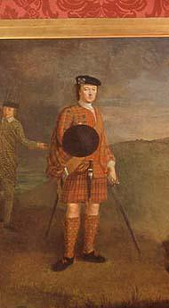

Battle of Falkirk Moor
La bataille de Falkirk
17th January 1746
from Hogg's "Jacobite Relics" 2nd Series N°68 page 136, 1821Tune - Mélodie
"Cameron got his wife"
Same tune as "Up an' waur awa"

|
THE BATTLE OF FALKIRK MOOR
CHORUS: Up and run awa', Hawley, Up and run awa' The filabegs are comin' doon To gie your lugs a claw! (bis) 1. Young Charlie's face At Dunipace Has gi'ed your mou' a thraw, A blasting sight For bastard wight, The worst that e'er he saw! (bis) Up and run awa', Hawley, etc. 2. Gae dight your face And turn the chase For fierce the wind does blow, And .Hielan' Geordie's At your tail, Wi' Drummond, Perth and a' Had you but stayed Wi' ladies maid, An hour and maybe twa, Your bacon bouk And bastard snout, Ye might have saved them a'! Up and run awa', Hawley, etc. 3. Whene'er ye saw The bonnets blue Down frae the Torwood draw A wisp in need Did ye bestead Perhaps you needed twa! General Husk That battle-busk That prime o' warriors a', With whip and spur He crossed the furr As fast as he could ga' Up and run awa', Hawley, etc. 4. I hae but just Ae word to say And ye maun hear it a', We came to charge Wi' sword and targe And nae to hunt awa', When we came down Aboun the town And saw nae faes at a', We couldna, sooth! Believe the truth That ye had left us a'! Up and run awa', Hawley, etc. 5. Nae man bedeen Believed his e'en Till your brave back he saw, That bastard brat O' foreign cat Had neither pluck nor paw. We didna ken, But ye were men Wha fight for foreign law, Hey, fill your wame Wi' brose at hame, It fits ye best of a'. Up and run awa', Hawley, etc. 6. The very frown O' Hielan' loon, It gart ye drop the jaw, It happ'd the face Of a' disgrace And sickened Southron maw, The very gleam O' Hielan' flame It puts you in a thaw, Gae back and kiss Your Daddy's miss, You're nane but cowards a'! Up and scour awa', Hawley, Up and scour awa'! The Hielan' dirk is at your doup And that's the Hielan' law! |
 |
LA BATAILLE DE FALKIRK
REFRAIN: C'est le sauve-qui-peut, Hawley! C'est le sauve-qui-peut! Les filibegs foncent sur vous; Attention, gare aux coups! (bis) 1. Ce face à face A Dunipace Avec Charlie, fut un Navrant spectacle Et tu renâcles, Et ne t'en remets point! (bis) C'est le sauve qui peut, etc. 2. Essuie tes larmes! Range tes armes! Prend garde à l'aquilon! George Murray Te court après, Avec Perth et Drummond. Ah, que n'es-tu Une heure de plus Demeuré près des dames, Ton ventre gros Et ton museau Seraient loin de nos lames! C'est le sauve qui peut, etc. 3. En voyant que Les Bonnets Bleus Sortaient du bois de Tor, D'un torche-cul Vous avez eu Besoin et plus encor! Husk, général, Vrai Hannibal Dans sa grande tenue, Enfonce à fond Ses éperons, File à bride abattue! C'est le sauve qui peut, etc. 4. Encore un mot; Court, mais il fau- Drait que tous l'écoutassent: C'est à la charge Qu'épées et targes Servent, non à la chasse. Dans la ville où Nous entrons, tout Adversaire avait fui. Nul ne pouvait Le croire, mais, Vous en étiez partis! C'est le sauve qui peut, etc. 5. Et personne N'en crut ses yeux Avant de voir ton dos; Tes avortons D'étrangers n'ont Ni mordant ni culot, Nous l'ignorions, Vos bataillons Etaient de mercenaires. Rentrez chez vous, Mangez! C'est tout Ce que vous savez faire! C'est le sauve qui peut, etc. 6. Qu'un de nos gueux Roule les yeux, Cela vous terrorise. Votre oeil hagard Erre au hasard, La peur vous paralyse, Puisque l'aspect De nos épées Brusquement vous ranime, Allez vite em- Brasser maman, Poltrons, lâches indignes! C'est le sauve-qui-peut, Hawley, C'est le sauve-qui-peut! Vois, leurs poignards piquent ton lard, Donc, place aux Montagnards! (Trad. Ch.Souchon (c) 2010) |
|
Back in Scotland, after Derby, the Jacobite numbers rose again to eight
thousand and they began a siege of Stirling Castle. To aid the
trapped government force, General Henry Hawley left Newcastle
with eight thousand troops.
On 16 January 1746, Hawley was in Callendar House, near Falkirk, resting before the Stirling confrontation. He woke, however, to find the Jacobites had come to meet him and were massing on the Plateau of Torwood behind the houses. The Hanovarians rushed to get onto the high ground also, but the scramble up the muddy hillside through the morning mist was disorganised and disastrous. Less than fifty Jacobites were lost in the twenty minute rout which took the lives of hundreds of Hawley’s troops. The Hanovarians made for Linlithgow and the Jacobites resumed their siege. |
De retour en Ecosse, après Derby, le nombre de partisans Jacobites était à nouveau
de 8000 et ils mirent le siège à Stirling Castle. Pour dégager les forces
gouvernementales assiégées, le général Henri Hawley quitta Newcastle
avec, lui aussi, 8000 hommes.
Le 16 janvier 1746, Hawley atteignait Callendar House, près de Falkirk, et y fit étape pour préparer un engagement à Stirling. Mais le lendemain, il s'aperçut que les Jacobites étaient venus à sa rencontre et massaient leurs troupes sur le plateau situé en arrière des habitations. Les Hanovriens se ruèrent à l'assaut du plateau eux aussi, mais l'ascension des pentes boueuses dans la brume matinale s'effectua d'une façon désordonnée et désastreuse. Moins de 50 Jacobites tombèrent au cours des vingt minutes qui coûtèrent la vie à des centaines de soldats de Hawley mis en déroute. Les Hanovriens se dirigèrent vers Linlithgow tandis que les Jacobites reprenaient leur siège. |